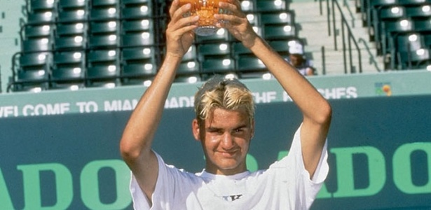

Roger Federer started playing tennis at age 8 in Switzerland


Roger Federer was known for his refined technique and extremely fluid movement on the court. He had excellent control of his shots, especially his forehand and one-handed backhand, along with outstanding footwork. His ability to adapt to different surfaces was also one of his greatest strengths.
Federer played an aggressive and intelligent style, often controlling points from the start with a consistent serve and varied shot selection. He frequently approached the net to finish points with efficient volleys, showing great court awareness and decision-making under pressure.

Roger Federer officially retired from professional tennis in September 2022 at the age of 41. After a legendary 24-year career, his final appearance was an emotional doubles match alongside his long-time rival and friend, Rafael Nadal, at the Laver Cup in London. Persistent knee injuries and surgeries were the main reasons behind his decision to step away from the tour.

Roger Federer is widely considered one of the greatest tennis players in history. His legacy goes beyond records and titles, as he transformed modern tennis with his elegant playing style, sportsmanship, and global popularity. Federer inspired millions of fans and young athletes through his consistency, humility, and respect for opponents. He won multiple Grand Slam titles and spent many years at the top of the world rankings, helping define a golden era of tennis alongside rivals like Rafael Nadal and Novak Djokovic. His graceful technique and calm attitude made him a symbol of excellence in the sport. Beyond tennis, Federer is also known for his charity work through the Roger Federer Foundation, which supports education projects for children in Africa and Switzerland. His influence on tennis and sports culture will continue for generations.